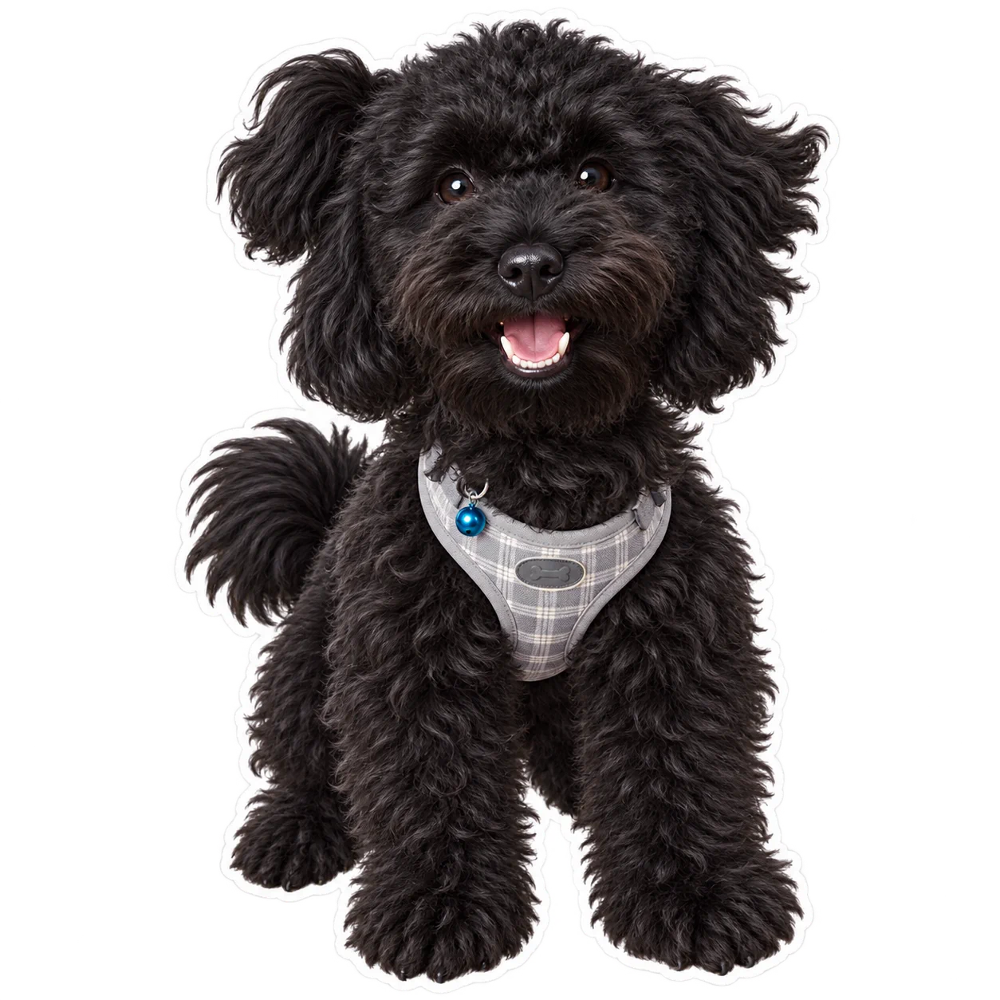
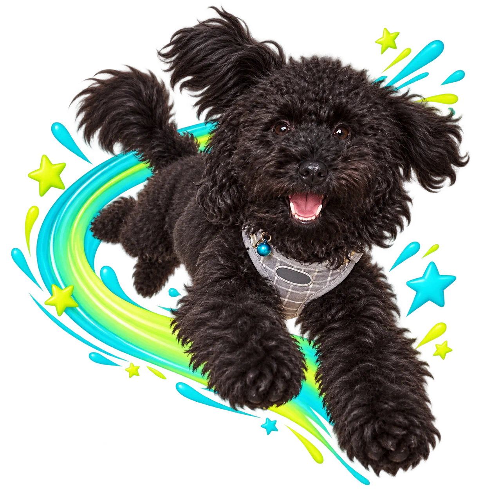

SOURCE-FROZEN AUDIT · 6531B37
它不是动画模型。
它是一条动态贴纸生产线。
输入角色，先锁定静态形象，再路由视频能力，最后由确定性程序完成切图、透明处理、循环编码、质量检查和打包。真正的价值，是把不稳定的生成模型包进一套可审批、可降级、可追溯的交付流程。
- 498
- 跟踪文件
- 29
- 执行脚本
- 05
- 外部视频适配
- 14
- 测试文件
DELIVERED / ANIMATED WEBP
240 × 240 · LOOP
01.WEBP
05.WEBP
09.WEBP
REFERENCE→APPROVAL→VIDEO→PACKAGE
证据说明以上三份 Animated WebP 直接来自固定上游快照的 examples/black-cat/；不是本研究重新生成的结果。
01Agent 负责理解与编排角色特征、表情语义、审批、路由和异常说明
02生成模型负责创造像素透明静图与图生视频来自宿主或外部 Provider
03本地程序负责可靠交付检测、裁切、去背、编码、QC、报告与 ZIP
01 / SCENE CAPABILITY ATLAS
不是六种特效。
是六种不同的业务任务。
同一条管线，进入场景后会改变身份约束、动作语义、审批重点和交付格式。先选“为什么做”，再决定调用生成、导入还是本地后处理。
真实透明关键姿态 + 上游 keypose-local 实跑
BRAND / COMMUNITY
把一个吉祥物，变成一套会回应用户的品牌语言。
重点不是“画更多姿势”，而是先固定轮廓、材质、配色与性格，再把欢迎、收到、庆祝、提醒、安慰等高频社群语义编译成动作。
- 输入
- 角色锚点 + 品牌语气 + 反应清单
- 推荐路线
- 角色图 → 静图审批 → 分格动作 → 动态交付
- 交付
- 社群表情包、客服快捷回应、活动主题包
- 验收
- 轮廓相似度、品牌色偏差、语义可读性
边界这是 `keypose-local` 的真实姿态变化；时间是确定性阶梯切换，没有光流插帧，因此还达不到视频模型案例的连续形变。
真实 CC0 输入 + 透明关键姿态 + keypose-local
PERSONAL / PET
把“我家的它”，变成聊天里长期可用的第二张脸。
宠物场景最看重身份保持：毛色、耳型、嘴部、配饰不能在不同表情里漂移；动作数量反而是第二优先级。
- 输入
- 1–3 张清晰参考图 + 身份锚点
- 推荐路线
- 先锁一张静图 → 人工确认 → 再扩表情
- 交付
- 个人聊天包、纪念包、节日增量包
- 验收
- 毛色、五官、配饰、透明边缘
边界眼睛和前爪确实改变姿态，但复杂黑毛在不同关键图间仍有细节漂移；没有声称做了光流或视频级时序一致性。
 工作区已有儿童内容样例 · 本页作为输入演示
工作区已有儿童内容样例 · 本页作为输入演示
找到啦再试一次太棒了晚安
工作区真实素材 + 管线路线演示
KIDS / STORY LEARNING
让故事角色承担鼓励、引导和情绪安抚。
同一个世界观可以按角色拆成贴纸包，也可以按学习环节拆成反馈包。动作幅度、节奏和色彩要比社群贴纸更温和、更易读。
- 输入
- 角色设定图 + 年龄段 + 反馈语义
- 推荐路线
- 分角色静图 → 亲子审批 → 轻动作循环
- 交付
- 故事互动、学习反馈、睡前陪伴贴纸
- 验收
- 角色一致、动作安全、语义单一、循环柔和
边界页面未声称已为整套故事角色生成动画；展示的是可进入仓库的输入资产和一张真实角色扩展结果。
真实商品关键状态 + 上游 keypose-local 实跑
COMMERCE / LAUNCH MOMENT
把产品卖点，压缩成一眼能懂的动态符号。
“实时翻译”不必重放整条广告：一对耳机、一条跨色声波和一次脉冲，就能成为发布会、直播间与客服会话中的轻量传播单元。
- 输入
- 产品图 + 卖点 + 活动语气
- 推荐路线
- 抠出商品 → 构造关键姿态 → 图生视频 / 本地循环
- 交付
- 上新贴纸、直播角标、卖点反应包
- 验收
- 产品结构、材质、品牌资产、卖点辨识
边界耳机主体基本稳定、声波与指示灯发生状态变化；三状态仍是阶梯时序，不是连续粒子模拟或生成式视频。
工作区真实知识素材 + 管线路线演示
EDUCATION / MICRO EXPLAINER
贴纸不只表达情绪，也能承载一个最小知识循环。
笔顺、部件拆解和答案揭示都适合编成 1–3 秒循环；仓库的价值在于把每一步裁成独立素材并稳定编码，而不是判断知识是否正确。
- 输入
- 知识图板 + 步骤顺序 + 正确答案
- 推荐路线
- 独立步骤图 → 审批 → 本地时序合成
- 交付
- 微课贴纸、错题反馈、步骤提示
- 验收
- 知识正确、顺序明确、文字不变形
边界仓库没有事实校验器；汉字来源、笔顺与拆解结论必须由内容负责人确认。
上游真实输出 + 源码可验证的加工路线
MIGRATION / REPUBLISH
已有素材不用重做，先识别它是什么，再转成可交付包。
静态图板、整板视频和独立文件有三条不同入口。工具检测真实网格、叠线预览与置信度，避免为了“统一”而伪造 1×1 图板。
- 输入
- 静态图板 / 网格视频 / 独立 PNG、GIF、WebP
- 推荐路线
- 探测 → 人工覆盖 → 裁切 → 透明 → 编码
- 交付
- 统一尺寸媒体、质量报告、处理清单、ZIP
- 验收
- 裁切完整、Alpha 正确、循环无跳帧、体积合规
边界保守色键不能代替专业时序抠像；复杂发丝、阴影和跨格运动仍可能需要外部工具。
当前场景：01 品牌互动 · 吉祥物身份合同、社群语义与多格式交付。
共享骨架输入识别→身份 / 布局合同→审批→能力路由→后处理与交付
变化的是语义、风险与验收标准；不变的是“先锁定，再生成，再确定性交付”。
02 / VIDEO PROMPT WORKBENCH
我生成提示词。
你去生成视频。
这里不连接任何视频平台。系统只把源图、身份约束和你的动作意图整理成一份可复制的 Image-to-Video 提示词；你再自行选择平台、上传源图并点击生成。
SOURCE REFERENCEPROMPT INPUT
推荐样例 · 连续动作清晰
毛毡材质允许少量纹理变化；小幅原地庆祝适合检验连续肢体动作和回环质量。
当前：毛毡小龙庆祝 · 提示词已生成 · 未调用任何视频服务。
用户真实回传视频 + 仓库后处理实跑
PROMPT → USER GENERATION → STICKER DELIVERY
成片已经回来。
现在验证完整闭环。
提示词由本项目生成；768×768 MP4 由用户在外部平台生成；透明 WebP、GIF、PNG、ZIP 和质检报告由固定上游脚本本地输出。三段能力不混在一起。
01 / USER-GENERATED MP4GREEN PLATE
- 来源
- 用户驱动外部平台
- 媒体
- 768² · 24fps · 158 帧
- 时长
- 6.583 秒 · 含 AAC 音轨
- 实测背景
#6FF280
动作完成了蓄力、跳跃举臂、落地、挥手和站姿恢复。源图身份大体保持，但模型重建了新的站立首姿。
02 / TRANSPARENT STICKERQC PASSED
- 路线
- edge-color → Alpha → encode
- 媒体
- 240² · 8fps · 53 帧
- 时长
- 6.625 秒 · 无音轨
- GIF 预算
- 772KB / 1MiB · PASS
53 帧背景、Alpha 和编码检查全部通过；静止段仍有低幅抖动，报告为 residual-hold-jitter，没有被包装成“完美循环”。
- 01项目
生成身份、动作、镜头和背景提示词。
- 02用户
选择平台、上传源图、粘贴提示词并生成 MP4。
- 03项目
接收视频，逐帧去背、质检、编码并装包。
03 / REPRESENTATIVE WORKSPACE DEMO
个人表达场景，
用我们的黑色长毛犬跑一遍。
这张 CC0 原图来自另一项工作区研究。它有复杂黑色卷毛、灰色格纹胸背和蓝色挂饰，既适合验证身份锚点，也会放大透明边缘、暗部细节和风格漂移问题。
OUR SOURCE / CC01920 × 2560 · WEB PREVIEW
INPUT 00
REAL OUTPUT / ALPHA WEB PREVIEW1254 × 1254

STATIC RESULT · ACCEPTED
本次真实生成 · 对应仓库静图阶段
CORE / IDENTITY LOCK
先证明“还是它”，
再讨论怎么让它动。
结果保留黑色卷毛、垂耳、长吻部、格纹胸背和蓝色挂饰；背景含真实 Alpha，可作为后续静图审批输入。
- 生成者
- 内置图像编辑器
- 仓库负责
- 身份合同、审批与后续路由
- 当前停止点
- 静图结果，尚未调用视频 Provider
REAL OUTPUT / ALPHA WEB PREVIEW1254 × 1254

EXTENDED EFFECT · KINETIC
本次真实生成 · 仓库外创意扩展
EXTENSION / KINETIC TRAIL
动作还没做成视频，
先把“冲出去”画进单帧。
青色到荧光绿的速度弧线、星形冲击点和前探姿态，让静态贴纸先获得方向与力度；脸部和胸背保持无遮挡。
- 新增效果
- 速度轨迹、冲击火花、动作构图
- 能力归属
- 本项目扩展提示层，不是上游内置滤镜
- 可接入点
- 作为关键姿态或独立贴纸输入
REAL OUTPUT / ALPHA WEB PREVIEW1254 × 1254
EXTENDED EFFECT · MOOD
本次真实生成 · 仓库外创意扩展
EXTENSION / MOOD FIELD
不只换表情，
还可以给情绪一层视觉语法。
蜷卧姿态对应“困困”，紫蓝光环、星点与月牙负责氛围表达；图外仍为真实透明像素，能直接叠在聊天界面上。
- 新增效果
- 氛围光环、微粒、月牙语义
- 能力归属
- 本项目扩展提示层，不是仓库标准动作
- 质量边界
- 姿态和配饰发生生成式重绘，仍需人工验收
SEMANTIC KEYPOSE ANIMATION / ALPHA WEBP420 × 420 · 3 KEYPOSES
KEYPOSE WEBP · PLAYING
STATIC WEBP · REDUCED MOTION
本轮真实编码 · 上游 keypose-local 路线
SEMANTIC KEYPOSE / GREETING
不是整张图在晃，
是眼睛和前爪真的换了姿态。
三张透明关键姿态依次表现睁眼端坐、闭眼抬爪、睁眼挥爪；固定上游脚本按 0→1→2→1 组帧并编码 Animated WebP、GIF 和首帧 PNG。
- 动作
- 眨眼、抬爪、挥爪，身体中心基本固定
- 媒体
- 3 关键姿态 · 6fps · 2 秒 · 无限循环
- 能力边界
- 阶梯时序，无光流插帧；黑毛细节仍需人工验收
当前效果：01 身份贴纸化 · 对应静图生成与审批入口。
01CC0 原图已固定来源与散列
→
02身份贴纸3 份透明静图已生成
→
03静图审批可进入哈希绑定
→
04语义关键姿态眨眼 / 抬爪 / 挥爪
→
05媒体交付WebP / GIF / PNG / ZIP
本轮真实完成：源图选择、三份透明静图、三张语义关键姿态，以及一条眨眼 / 抬爪 / 挥爪循环的 WebP / GIF / PNG / ZIP 交付。没有冒充完成：光流插帧、生成式视频和平台投稿。
04 / INPUT-LED ROUTE TOUR
场景决定目标。输入类型决定怎么走。
每个样例都回答四件事：你给什么、它做什么、交付什么、哪里会停。绿色“真实输出”来自固定上游快照；蓝色“流程样例”用于解释代码路径，不冒充本次运行结果。
上游真实输出 + 流程样例
EXAMPLE 01
“把这只黑猫做成一套 3D 动态表情。”
示例输入角色参考图 + 3D + 开心 / 喜欢 / 委屈 / 惊讶 / 亲亲 / 谢谢 / 加油 / 困困 / 点赞
- 1
读角色提取黑色毛发、圆头、大眼、短肢和红色配饰等身份锚点。
- 2
先出静图生成透明图板，检测模型实际返回的网格，再让用户看图确认。
- 3
再做动画逐格编译小动作，选择视频路线，最后切图、编码并打包。
09 × WebP09 × GIF09 × PNGlayout.jsonprocessing.jsonZIP
能力边界身份保持和动作自然度仍需人工看；整板视频可能出现跨格污染。
REAL UPSTREAM OUTPUTexamples/black-cat
开心 · 01.webp
喜欢 · 05.webp
反应 · 09.webp
三份文件来自固定提交，网页直接播放 Animated WebP。
流程样例 · 非本次生成
EXAMPLE 02
“这张 4×3 图板我已经选好了，直接让它动起来。”
示例输入static-sheet.png / source-type: user-supplied / layout preference: 4×3
- 1
重新观察布局请求的 4×3 只是偏好；脚本仍检测实际列、行、数量和置信度。
- 2
跳过重复确认用户自己提供的图板直接进入 static-approved，不会再要求“确认一次”。
- 3
逐格写动作为检测到的 12 格建立动作计划，再进入视频能力路由。
layout.jsonjob-state.json12 条动作计划route.json
能力边界自由排版或置信度低于 0.75 时必须看叠线图并人工覆盖，不能盲切。
ILLUSTRATIVE FLOWdetected_layout
010203040506070809101112
- observed
- 4 columns × 3 rows
- count
- 12 cells
- confidence
- 0.93 · 示例值
- review
- user-supplied → approved
流程样例 · 非本次生成
EXAMPLE 03
“我只有一段九宫格 MP4，把它拆成可发送的表情。”
示例输入grid.mp4 / 3 seconds / source fps / unknown layout
- 1
抽代表帧没有对应静图时，先从 MP4 抽一帧，再检测实际网格。
- 2
按格处理以同一布局切所有帧，保留真实 Alpha；不透明时才使用边缘连通色键。
- 3
复检交付检查原生帧、静止段位移、循环跳变和解码结果。
01.webp … 09.webp01.gif … 09.gif首帧 PNGprocessing.json
能力边界保守色键不是专业时序抠像；发丝、运动模糊和复杂阴影仍可能受损。
ILLUSTRATIVE FLOWpostprocess-only
↓
抽帧检测 3×3逐格裁切Alpha / 色键循环编码
↓
01.webp01.gif01.png× 09
上游真实输出 + 流程样例
EXAMPLE 04
“这三张是独立贴纸，别把它们拼成九宫格。”
示例输入stickers/01.png + 02.png + 03.png / independent files
- 1
保留独立语义直接读取文件集合，不为每张图伪造一个 1×1 layout.json。
- 2
逐张处理每张贴纸独立归一尺寸、透明和动画帧。
- 3
统一装包按确定顺序编号并输出相同格式集合。
独立 WebP独立 GIF首帧 PNG一个 ZIP
能力边界如果输入本身动作、画布和帧率差异过大，归一化只能保证格式，不能自动统一美术质量。
REAL FILE EXAMPLESno grid invented
01.webpindependent
02.webpindependent
03.webpindependent
流程样例 · 非本次生成
EXAMPLE 05
“不要上传，不调用外部 API，只用本地能力。”
示例输入approved-sheet.png / external API: forbidden / Pillow + NumPy: available
- 1
排除外部路线不会把参考图和提示词发送给视频 Provider。
- 2
选择 transform-local对整张贴纸做轻微位移、缩放或旋转，生成可循环帧。
- 3
明确降级交付中记录所用路线，不把仿射循环描述成生成式视频。
本地循环媒体route.jsonprocessing.jsonZIP
能力边界本地模式不会让眼睛、嘴巴或四肢产生新的语义动作；它只是整图轻量变换。
ILLUSTRATIVE ROUTEexternal: forbidden
03transform-localPillow + NumPy
SELECTED
translate · scale · rotate · loop
当前样例：01 角色图做整包 · 从角色身份到动态 ZIP。
05 / EXTENSION ROADMAP
可扩展，不等于“再接一个模型”。
真正值得扩的是确定性能力：平台交付合同、质量指标、时序透明、品牌版本和成本路由。每一项都能用结果验收，而不是只增加 Provider 名单。
NOW · 先补交付平台包 + 动作模板最快把现有能力变成可复用产品
→
NEXT · 再补可靠性时序抠像 + 自动 QC解决最常见的返工与边缘破损
→
LATER · 最后规模化品牌系统 + 成本路由服务多角色、多活动和团队协作
01 · DELIVERY近期
平台专用交付包
当前通用 WebP / GIF / PNG 还不能直接等同于每个平台原生包。
- 扩展模块
- Telegram WebM、Discord APNG、WhatsApp 尺寸与体积预设、manifest 生成器
- 验证指标
- 上传零报错、尺寸 / 帧率 / 体积全部过平台校验
价值场景：品牌互动、个人表达、资产迁移
02 · MOTION DSL近期
可复用动作语义库
现在逐格提示词很强，但跨角色复用仍主要依赖人工描述。
- 扩展模块
- “庆祝 / 收到 / 困惑 / 警告”等动作模板、幅度和节奏参数、角色适配规则
- 验证指标
- 同一语义跨三类角色仍可读，身份锚点不被动作遮挡
价值场景：品牌互动、儿童内容、教育知识
03 · TEMPORAL ALPHA工程
时序抠像与边缘修复
边缘连通色键足够保守，但面对发丝、半透明光效和运动模糊仍会漏边或挖空。
- 扩展模块
- 视频分割 Adapter、跨帧 Alpha 平滑、去溢色、边缘羽化与对照预览
- 验证指标
- Alpha 闪烁率、边缘污染率、内部误删率低于阈值
价值场景：宠物、商品营销、复杂角色
04 · QUALITY SCORE工程
身份与循环自动质检
当前报告偏媒体技术指标；“还是不是它”和“动作懂不懂”仍主要靠人看。
- 扩展模块
- 参考图相似度、品牌色差、遮挡检测、动作语义评分、首尾帧跳变评分
- 验证指标
- 自动拦截已知坏样本，同时保留人工覆盖和理由记录
价值场景：所有需要规模化批量生产的场景
05 · BRAND SYSTEM产品
角色圣经与版本治理
哈希能锁一份图板，但还没有跨活动、跨角色的长期品牌资产关系。
- 扩展模块
- 角色 token、禁用动作、配色规范、审批角色、版本差异和增量发布
- 验证指标
- 旧包可复现，新包能追溯到角色规则与审批版本
价值场景：品牌矩阵、儿童 IP、长期运营
06 · COST ROUTING产品
质量 / 隐私 / 成本联合路由
当前路由以硬能力和优先级为主，还缺少任务级预算与历史质量反馈。
- 扩展模块
- 单格成本上限、隐私等级、Provider 成功率、缓存复用、失败不重复计费策略
- 验证指标
- 每包成本可预测，敏感输入不越界，失败提交次数可审计
价值场景：商品营销、团队生产、私有角色
对我们的意义
短期：把已有工作区角色、商品分镜和知识图板转成可传播小资产。中期：形成“内容项目 → 贴纸包”的统一交付层。长期：沉淀角色、动作、质量和成本数据，变成可复用的内容生产基础设施。
06 / PRODUCTION PIPELINE
六个阶段，把“生成一下”变成“交付一包”。
选择阶段查看它接收什么、由谁执行、留下什么证据。静图确认是付费动画之前的硬门，不是聊天里的礼貌步骤。
01
INTAKE / WORKSPACE
先确定入口，不把所有素材硬塞进九宫格。
角色参考图、纯文字角色、现成图板、整板视频和多张独立贴纸走不同入口。每个角色创建独立工作目录，避免旧文件进入新交付。
- 输入
- 角色图、文字角色、图板、视频或独立贴纸
- 执行者
- Agent +
character_workspace.py - 证据
works/<character>/ 独立工作区
02
STATIC SHEET / ALPHA
先把角色、表情和布局变成可检查的静态事实。
Agent 从参考图提取可见身份特征并编译提示词；上游推荐由支持参考图与透明输出的宿主工具生成 PNG，再检测真实网格和 Alpha，而不是相信提示词请求。
- 输入
- 身份特征 + 风格 + Emoji / 表情描述
- 执行者
- 宿主图像模型 + 网格检测脚本
- 证据
static-sheet.png + layout.json
03
STATIC REVIEW / SHA-256
用户批准的是这一张图，不是一句可以复用的“确认”。
生成图板必须展示给用户。批准状态绑定图片和布局哈希；一旦重新生成，旧审批和所有下游产物立即失效，动画执行器在哈希不一致时关闭。
- 输入
- 静图 + 检测布局 + 明确用户确认
- 执行者
manage_job_state.py- 证据
job-state.json + SHA-256
04
DISCOVERY / ONE ROUTE
先探测能力，再只执行一条满足条件的路线。
路由器区分“目录里装过工具”和“当前真的可调用”。原生图生视频优先，其次是已配置 Provider，然后才是关键姿态、本地仿射和 Prompt-only。
- 输入
- 运行时工具清单 + Provider 配置 + 任务约束
- 执行者
- probe / route / execute 三段合同
- 证据
capabilities.json + route.json
05
SPLIT / MATTE / ENCODE
生成模型交回视频以后，确定性程序接管。
FFmpeg 抽帧，实际布局决定裁切；已有 Alpha 就保留，否则只移除与裁切边缘连通的相似背景色，降低挖空角色内部的风险，再编码循环 WebP、GIF 和首帧 PNG。
- 输入
- 规范源视频 + 实际布局 + 背景策略
- 执行者
- Python / Pillow / NumPy / FFmpeg
- 证据
- 编号媒体 +
processing.json
06
QC / ASSEMBLY
最后交付的不只是媒体，还有生成过程的审计轨迹。
交付目录合并媒体、审批、提示词、路由和处理报告。布局低置信度、Alpha 损伤、循环跳变、Provider 降级或失败格必须显式报告，不能用一个 ZIP 掩盖。
- 输入
- 媒体目录 + 审计目录 + 输出合同
- 执行者
assemble_delivery.py- 证据
delivered/ + ZIP + 五类 JSON
当前阶段：01 输入建档 · 明确素材类型和独立工作区。
07 / CAPABILITY LAYERS
谁在提供能力？把功劳分清。
这套 Skill 的成熟之处，不是宣称自己包办一切，而是明确哪些能力来自 Agent、生成模型、Provider Gateway 和本地媒体栈。
当前显示全部 10 项能力。
AGENT多入口识别
参考角色、文字角色、现成图板、整板视频和独立贴纸分别进入不同处理路径。
SKILL.md / Workflow 1
AGENT角色身份约束
从图像读取脸、毛发、轮廓、颜色、服装、配件和姿态语言，默认保留源角色特征。
compile_static_prompt.py
AGENT逐格动作计划
每个检测到的格子必须有独立、语义匹配的动作计划；通用动作只能作为明确降级。
prompt_compiler.py
GENERATION透明静图主路径
请求宿主图像工具使用参考图生成透明 PNG；Alpha 由像素检查确认，不把棋盘格预览当透明。
prepare_image_gen_call.py
ROUTING能力驱动路由
原生图生视频优先，外部 Provider 按任务硬要求与优先级过滤，而不是仅凭厂商名称。
route_video_provider.py
GATEWAY五类视频适配
锁定 xAI、Kling、ByteDance、Alibaba 和 FAL 的 AI SDK 依赖，也允许受约束的 command Adapter。
video_gateway.mjs
MEDIA真实网格检测
请求布局只作为偏好；后续裁切始终读取实际检测的列、行、数量和置信度。
inspect_sticker_sheet.py
MEDIA透明循环编码
保留源 Alpha 或做边缘连通色键，输出 Animated WebP、GIF、首帧 PNG 和 ZIP。
process_emoji_grid.py
STATE哈希审批门
图像或布局变化会使旧审批失效；Python 与 Node 执行器都会在哈希不匹配时停止。
manage_job_state.py
QC可审计交付
记录 Alpha、尺寸、帧率、越界、静止段位移、循环质量、路由和失败格。
processing.json / route.json
08 / GRACEFUL DEGRADATION
有视频工具时向上走，没有时诚实向下退。
探测不会产生费用。只有显式执行一条 route attempt 才会提交生成；第一次外部付费调用前必须说明 Provider 和计费可能。
- 01
NATIVE VIDEO
当前 Agent 的图生视频工具
必须真实可调用、能接收参考图；文生视频不算。
- 02
EXTERNAL VIDEO
已配置的外部 Provider
xAI / Kling / Seedance / Wan / FAL；按硬能力和优先级过滤。
- 03
KEYPOSE LOCAL
关键姿态 + 本地组帧
有生图、无视频时生成每格 3–5 个姿态，再本地编排。
- 04
TRANSFORM LOCAL
整张贴纸的仿射循环
只有 Pillow / NumPy 时做位移、缩放和轻微旋转。
- 05
PROMPT ONLY
交付计划，然后明确停止
没有视频和本地媒体能力时只交付提示词与路由审计，不冒充成片。
09 / CLAIM CONTROL
能力成立，但每一层都有限定词。
下面把“源码能证明”“作者主路径主张”“仍需真实调用验证”分开，避免把完整的工作流误读为已经验证过所有生成质量。
命题当前证据判断
能输出完整贴纸包源码含切图、编码、装配脚本和真实 WebP/GIF/PNG 样例。
源码已证
审批不会串版本图片与布局 SHA-256 绑定；Python、Node 执行前双重校验。
合同已证
能自动选视频路线Probe、Route、Execute 分离，五类 Adapter 依赖被锁定。
代码已证
静图一定有完美 Alpha宠物、小龙和耳机共五份 PNG 已验证真实 Alpha，但第一次睡眠稿仍生成了假棋盘并被拒收；这些样本不能保证所有模型和请求。
五样本通过
外部视频一定自然稳定一份用户回传 MP4 已完成去背交付，但出现首姿重建与静止段低幅抖动；单样本不能证明不同平台和模型都稳定。
单样本已证
适配所有聊天平台通用包已有 WebP/GIF/PNG；Telegram WebM、Discord APNG 等仍是计划项。
当前不具备
01不是角色设计系统
输入最好已经有可识别角色；它负责保持和动画化身份，不负责从零建立完整角色圣经。
02不是通用视频剪辑器
固定镜头、独立小动作、规则图板是核心假设；长剧情和自由镜头语言不在范围内。
03不是专业视频抠像
边缘连通色键是保守工程折中，无法替代针对发丝、阴影和运动模糊的时序分割模型。
04不是安全沙箱
命令 Adapter 的环境经过过滤，但用户配置的可执行程序仍然拥有本机文件和网络能力。
FIXED RESEARCH SNAPSHOT
结论固定在一个提交上。
本页读取的是 6531b374c8a5c324a7d98067408832084a2182c9。上游完整源码已保存到研究子项目，可离线回看 Skill、脚本、Schema、测试和案例。
- 版本
- 0.2.0
- 获取日期
- 2026-08-30
- 许可证
- MIT
- 仓库侧费用
- ¥0 / 用户平台未计

{kind=link}
{kind=link}
{kind=link}
{kind=link}
{kind=link}